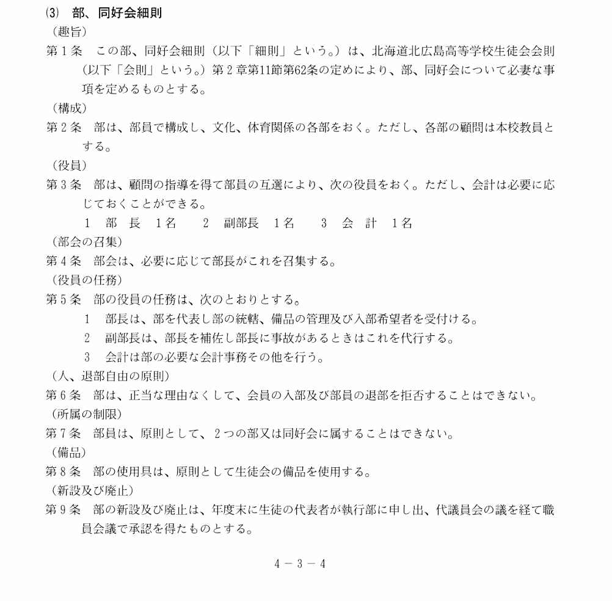
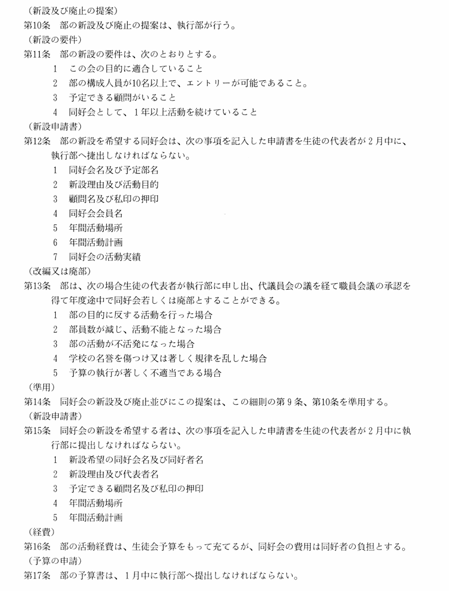
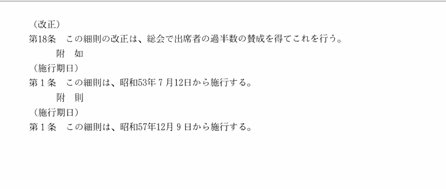

| 部活名 |
顧問 |
活動場所 |
| サッカー |
廣瀬/花海 |
グラウンド |
| 野球 |
近野/中川/谷口 |
グラウンド |
| 陸上競技 |
肥田/藤根/庄田 |
グラウンド |
| ソフトテニス |
後藤/ーー |
テニスコート（奥） |
| 男子硬式テニス |
ーー |
テニスコート（手前） |
| 女子硬式テニス |
水尻/ーー |
テニスコート（手前） |
| 男子バスケットボール |
青山/山口 |
体育館 |
| 女子バスケットボール |
白幡/高井 |
体育館 |
| 男子バレーボール |
ーー |
体育館 |
| 女子バレーボール |
目代/ーー |
体育館 |
| 男女バドミントン |
渡邊（励）/高野/塙 |
体育館 |
| 卓球 |
倉俣 |
体育館 |
| 剣道 |
ーー/山下 |
格技場 |
| 柔道 |
川上 |
格技場 |
| チアダンス |
櫻井/ーー |
1階ホール |
| アウトドア |
ーー |
山 |
| ESS |
久松/藤根 |
視聴覚室 |
| 生物部 |
小森/ーー |
生物室 |
| 書道 |
堀/ーー |
書道教室 |
| 囲碁・将棋 |
ーー |
ーー |
| 写真 |
吉野/ーー |
ーー |
| 美術 |
水本/ーー |
デザイン教室 |
| 華道 |
筧 |
被服室 |
| 茶道 |
加藤/ーー |
作法室 |
放送局
| 局名 |
顧問 |
活動場所 |
| 吹奏楽 |
笠原/ーー |
音楽室 |
| 図書 |
ーー |
図書室 |
| 放送 |
斎藤/若林 |
放送局室 |
軽音楽同好会
| 同好会名 |
顧問 |
活動場所 |
| 軽音楽 |
後藤/久松 |
映写室/視聴覚室 |
| パソコン |
藤澤/ーー |
パソコン教室 |
校内図いる？
部活動の新規設立条件
目的が確立していること
部の構成人数が10名以上、エントリーが可能であること
予定できる顧問がいること
同好会として1年以上活動していること
同好会の新規設立条件
同好会名と同好者名
新設理由および代表者名
予定できる顧問及び私印の押印
年間活動場所/年間活動計画
引用：生徒会会則


